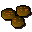

Spicy crunchies
| Config name | spicy_crunchies |
| Item id | 2213 |
| Value | 2 gp |
| Weight | 250g |
| Members | Yes |
| Tradeable | Yes |
| Stackable | No |
| Options | Eat |
| Category | gnome_crunchies |
| Defined in | scripts/skill_cooking/configs/gnome_cooking/crunchies.obj |
Spicy crunchies
Yum... smells good.
How to make
| Skill | Level | XP | Ingredients | Tool | How | Where | Makes |
|---|---|---|---|---|---|---|---|
| Cooking | 1 | 30.0 |  Unfinished crunchy, | use on item | 1 |
Referenced in scripts
scripts/_test/scripts/cheats/cheat_bank.rs2scripts/areas/area_gnome/scripts/gnome_restaurant.rs2scripts/skill_cooking/scripts/gnome_cooking/gnome_food_finish.rs2